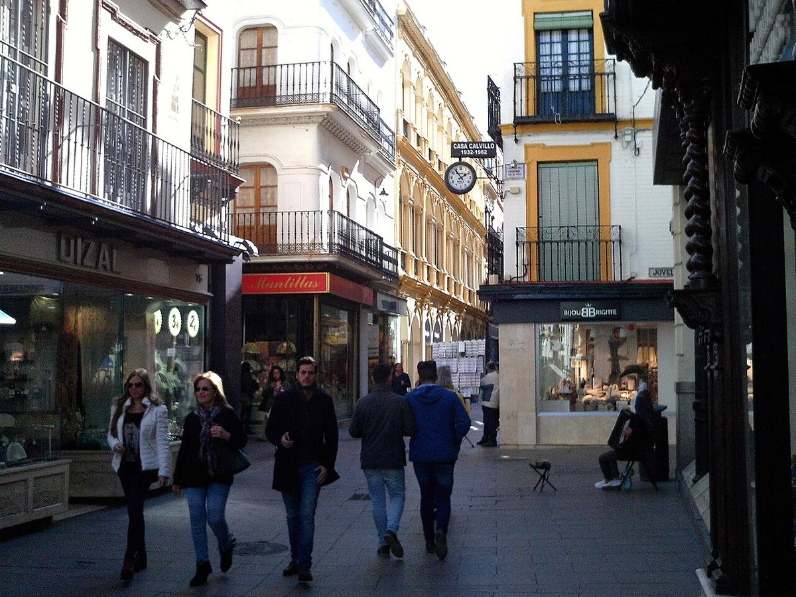

Ciudad, corona e interior · Elecciones: 2015-2023
Las capitales votan menos para elegir alcalde
45 de las 50 capitales votan menos que el resto de su provincia para elegir alcalde; Zamora y Soria, más de 14 puntos menos
Por Nacho G. del Álamo ·
En las municipales de mayo de 2023, Zamora votó el 59,8 % y el resto de su provincia, el 74,3 %. Soria, el 58,9 % frente al 73,1 %. En 45 de las 50 capitales de provincia la participación municipal fue menor que en el resto de la provincia, y en 11 la diferencia pasó de 10 puntos. En las generales de julio, ninguna capital se quedó a 10 puntos de su provincia.
Dato: verificable y reproducible
Ver Zamora en el mapa →Ver Soria en el mapa →Ver Cuenca en el mapa →Ver Badajoz en el mapa →Ver Ávila en el mapa →Ver Salamanca en el mapa →
La pregunta: ¿Dónde se queda la ciudad en casa en las elecciones municipales mientras su provincia vota?
La ciudad que no va a votar
DatoEl 28 de mayo de 2023 se eligieron todos los ayuntamientos de España. En 45 de las 50 capitales de provincia se votó menos que en el resto de los municipios de su provincia. Las mayores distancias, en Zamora (−14,5 puntos), Soria (−14,2), Cuenca (−12,4), Badajoz (−11,6) y, empatadas, Ávila y Salamanca (−11,4).
DatoDos meses después, en las generales del 23 de julio, la distancia casi desapareció. Zamora votó el 69,6 % y el resto de su provincia, el 73,9 %: 4,3 puntos de diferencia. En Soria, 4,4. En 30 capitales se votó menos que en su provincia, pero en ninguna a más de 10 puntos.
PatrónEn buena parte de España, lo que moviliza en las municipales es el pueblo, no la ciudad. Las capitales votan para el Congreso casi como su provincia y se quedan muy atrás cuando lo que se elige es el alcalde.
No es un año aislado
DatoEl patrón se repite en las municipales anteriores. En 2019, 45 capitales votaron menos que su provincia; en 2015, 44. Zamora estuvo 11,2 puntos por debajo en 2019 y 14,7 en 2015; Badajoz, 15,1 y 14,2.
DatoLas 50 capitales votaron menos en las municipales de mayo que en las generales de julio. La diferencia más grande, en A Coruña: 58,8 % frente a 73,4 %.
Las excepciones
DatoEn cinco capitales se votó más que en el resto de su provincia. Barcelona (+6,5) y Cádiz (+5,9) son los casos más claros; València, Murcia y Toledo votaron más o menos lo mismo que su entorno (+1,5, +1,8 y +0,1).
DatoEl Atlas ya mostró el otro lado de esta historia en la serie «Quién no vota»: los pueblos de menos de 2.000 habitantes son los únicos que votan más para elegir alcalde que para elegir al Gobierno.
Sobre el terreno
DatoSoria es la provincia menos poblada de España: a 1 de enero de 2025 tenía 90.234 habitantes empadronados, 41.025 de ellos en la capital. Fuentes: 1, 2
DatoLa ciudad de Zamora alcanzó en 2008 su máximo de población del siglo XXI, 66.672 empadronados; en 2025 tenía 59.815. Fuentes: 1, 2
Lo que no sabemos
- HipótesisPor qué. La competencia entre listas, la cercanía a los candidatos en los pueblos y el peso de los vecinos inscritos que no viven allí son hipótesis que esta pieza no ha contrastado con dos fuentes.
Dato: verificable y reproducible. Patrón: relación descriptiva, sin causa. Hipótesis: explicación posible que aún no tiene dos fuentes independientes.
Los datos
| Capital | Municipales capital | Municipales resto | Diferencia | Generales capital | Generales resto | Diferencia |
|---|---|---|---|---|---|---|
| Zamora | 59,8 | 74,3 | −14,5 | 69,6 | 73,9 | −4,3 |
| Soria | 58,9 | 73,1 | −14,2 | 71,2 | 75,6 | −4,4 |
| Cuenca | 65,8 | 78,2 | −12,4 | 72,8 | 78,4 | −5,6 |
| Badajoz | 63,0 | 74,6 | −11,6 | 70,3 | 74,6 | −4,3 |
| Ávila | 64,9 | 76,3 | −11,4 | 75,1 | 77,4 | −2,3 |
| Salamanca | 60,3 | 71,7 | −11,4 | 71,8 | 75,6 | −3,8 |
| Huelva | 54,2 | 65,3 | −11,1 | 64,8 | 66,4 | −1,6 |
| Córdoba | 58,0 | 69,0 | −11,0 | 71,1 | 73,4 | −2,3 |
| Lleida | 51,2 | 61,9 | −10,7 | 60,7 | 62,5 | −1,8 |
| Lugo | 64,1 | 74,6 | −10,5 | 72,4 | 73,7 | −1,3 |
| Palencia | 64,2 | 74,5 | −10,3 | 72,7 | 76,6 | −3,9 |
| Vitoria-Gasteiz | 57,8 | 65,9 | −8,1 | 66,5 | 69,3 | −2,8 |
| Teruel | 67,3 | 75,4 | −8,1 | 73,3 | 75,8 | −2,5 |
| Cáceres | 66,7 | 74,7 | −8,0 | 74,7 | 73,5 | +1,2 |
| Almería | 53,3 | 61,2 | −7,9 | 66,9 | 68,7 | −1,8 |
| Albacete | 66,0 | 73,8 | −7,8 | 73,2 | 75,3 | −2,1 |
| Segovia | 65,6 | 73,4 | −7,8 | 74,8 | 78,3 | −3,5 |
| Jaén | 63,1 | 70,7 | −7,6 | 72,7 | 73,9 | −1,2 |
| León | 60,4 | 67,7 | −7,3 | 73,1 | 73,2 | −0,1 |
| Santander | 64,8 | 72,0 | −7,2 | 73,8 | 76,0 | −2,2 |
| Ourense | 65,5 | 71,9 | −6,4 | 70,3 | 72,9 | −2,6 |
| Bilbao | 56,0 | 61,8 | −5,8 | 66,1 | 68,6 | −2,5 |
| A Coruña | 58,8 | 64,5 | −5,7 | 73,4 | 72,8 | +0,6 |
| Huesca | 62,8 | 68,5 | −5,7 | 71,4 | 73,1 | −1,7 |
| Las Palmas de Gran Canaria | 50,2 | 55,7 | −5,5 | 63,7 | 62,8 | +0,9 |
| Castelló de la Plana | 64,0 | 68,8 | −4,8 | 73,0 | 74,2 | −1,2 |
| Tarragona | 51,7 | 56,3 | −4,6 | 65,9 | 64,1 | +1,8 |
| Ciudad Real | 67,4 | 71,2 | −3,8 | 75,2 | 74,2 | +1,0 |
| Zaragoza | 66,2 | 69,9 | −3,7 | 72,5 | 73,6 | −1,1 |
| Girona | 49,8 | 53,4 | −3,6 | 62,5 | 62,1 | +0,4 |
| Burgos | 63,5 | 66,4 | −2,9 | 73,3 | 72,8 | +0,5 |
| Granada | 61,4 | 64,3 | −2,9 | 73,1 | 70,1 | +3,0 |
| Logroño | 69,8 | 72,7 | −2,9 | 74,7 | 75,0 | −0,3 |
| Valladolid | 67,0 | 69,9 | −2,9 | 75,4 | 77,1 | −1,7 |
| Palma | 53,7 | 56,5 | −2,8 | 62,5 | 64,2 | −1,7 |
| Santa Cruz de Tenerife | 54,1 | 56,9 | −2,8 | 63,6 | 64,2 | −0,6 |
| Alacant/Alicante | 60,5 | 62,9 | −2,4 | 69,8 | 72,2 | −2,4 |
| Málaga | 55,0 | 57,4 | −2,4 | 67,4 | 67,2 | +0,2 |
| Pamplona/Iruña | 66,3 | 67,8 | −1,5 | 70,2 | 69,7 | +0,5 |
| Pontevedra | 62,8 | 64,3 | −1,5 | 75,4 | 73,5 | +1,9 |
| Sevilla | 61,2 | 61,9 | −0,7 | 71,6 | 69,4 | +2,2 |
| Oviedo | 63,8 | 64,3 | −0,5 | 72,4 | 70,8 | +1,6 |
| Madrid | 68,5 | 68,8 | −0,3 | 73,4 | 74,9 | −1,5 |
| Guadalajara | 67,4 | 67,6 | −0,2 | 74,5 | 73,8 | +0,7 |
| Donostia/San Sebastián | 59,7 | 59,9 | −0,2 | 70,0 | 66,4 | +3,6 |
| Toledo | 69,8 | 69,7 | +0,1 | 77,2 | 73,5 | +3,7 |
| València | 71,5 | 70,0 | +1,5 | 76,1 | 74,3 | +1,8 |
| Murcia | 65,7 | 63,9 | +1,8 | 72,9 | 69,8 | +3,1 |
| Cádiz | 61,6 | 55,7 | +5,9 | 71,4 | 64,4 | +7,0 |
| Barcelona | 59,5 | 53,0 | +6,5 | 67,4 | 65,8 | +1,6 |
Método y fuentes
- Qué se compara
- Cada una de las 50 capitales de provincia frente al resto de los municipios de su provincia, en las municipales de 2015, 2019 y 2023 y en las generales de 2023. Ceuta y Melilla quedan fuera porque la ciudad es toda la circunscripción.
- Límites
- Participación = votantes / censo. El censo de las municipales incluye a los residentes de la Unión Europea inscritos, que votan menos; el de las generales, solo a los españoles residentes. La comparación capital-provincia no se ve afectada por ese cambio, pero la comparación municipales-generales sí, algo.
- Metodología completa
- Cómo se calculan los porcentajes, el modelo, los gemelos y los escaños
- Fuentes
- Autoría
- Nacho G. del Álamo
- Revisión de datos y texto
- Nacho G. del Álamo, 7 de octubre de 2026
- Publicado · actualizado
- 7 de octubre de 2026 · 7 de octubre de 2026
- Correcciones
- Ninguna. Historial del Atlas
Sigue leyendo
- Ciudad, corona e interiorLa capital no es la isla progresista de su provincia
- Contra su provinciaCastro-Urdiales, la excepción socialista de Cantabria
Todas las piezas de «Ciudad, corona e interior» · Todo el Atlas